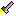
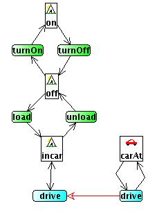

Creating and Using Library Items
Introduction
Planning domains even when dealing with diverse topics often share
structural elements. GIPO's library facility provides a way of storing
and re-using such general structural components. A library item is a
design for a re-usable structural component of a domain. A simple
example of such a structural component is a object type that operates
as a switch. It has two states and actions to toggle between the two
state. This example will be used to illustrate how library components
can first be created and then reused.
Creating a Library Item
Library items are created in the Life History Editor as domain designs
in their own right. To create the switch component we would start a new
domain within GIPO and open up the History Editor. I must give the
object type for the switch a name but even if this is destined to be a
library item and the name will most likely be changed in any final
domain it is still worth while using meaningful names. Using meaningful
names will help users of the library understand the library components.
Accordingly in the "Object Type" Text combo box I name the type
"switchType". I now in the normal way produce the life history diagram.

In this I have just selected state and action nodes twice each and
joined them up with connect arrows, but I have not yet followed my own
edit of using meaningful names. Accordingly I rename the states and
action nodes. I also position the nodes carefully relative to one
another and move the entire diagram to the top left hand corner of the
editor pane. I do this as the layout I use to save the library element
will be used as the default layout and position for the instances of
switches when selected from the library. I also confirm that the design
conforms to the editor's rules by using the  check action.
check action.
To complete the process I select the save library tool button  . and
when prompted by a "save as" dialog box provide the name "switch.gfx"
to save the library item. The default location for library items to be
saved is in the "library" sub-folder of the "domains" directory. If you
do not use this folder the saved item will not be visible in the
library browser.
. and
when prompted by a "save as" dialog box provide the name "switch.gfx"
to save the library item. The default location for library items to be
saved is in the "library" sub-folder of the "domains" directory. If you
do not use this folder the saved item will not be visible in the
library browser.
Finally I need to create some HTML text to describe my library
component and store this text in the library folder using the same
prefix name for my description file. That is if I have called my
library file "switch.gfx" I need to call my description file
"switch.html".
The switch library Item should immediately be visible in the library
list of entries. I can now close the life history editor and close the
domain definition. I can ignore any unsaved warning messages as we have
saved the item as a library component and we do not need to save it as
a stand alone domain definition. You should note that it was not
necessary for me to create the OCL domain specification, only the life
history diagram. In complex cases I may wish to create the full
specification and dynamically test it to ensure that the definition is
correct.
Viewing Library Items
Library items can be selected from the library list and viewed by
pressing the library item view button . The library viewer is a dialog box
showing the life history diagram for the library item and the html
description provided to explain the component. The viewer for the
"switch" component created above is shown here.
Using A Library Component
Library items can be inserted into domain definitions at ant stage in
the development of the domain definition. In practice it is probably
easier if library items are added early in the development and the
remainder of the domain built on top of the selected library item.
Before a library item is inserted into a well developed domain
consideration needs to be given as to its eventual location within the
diagram and ensuring that sufficient empty space exists in that area of
the diagram. When the item is first inserted into the diagram it will
be placed in the top left hand corner but it can immediately be
selected as a group and dragged to its target destination.
Example
In a domain such as the "Hiking" domain there is a model of a tent
object type where a tent may be either erected or packed up ready to
transport. The domain definition may already have begun with the
definition of the car transporter and the tent as an item that can be
transported from one location to another. At this stage the diagram may
look as follows.
The tent model may need to be extended with its behaviour as a switch
type object. To add this we select the switch library item from the
library list and press the insert arrow . The library item customisation
dialog is now presented, allowing the user to select an appropriate
icon for the tent and select the existing type tent for the switch
pattern. When chosen the switch pattern is inserted into the
transporter domain.
The pattern can now be moved to a more appropriate position and
ungrouped to allow further linking up with the "inCar" state. To link
up with the "inCar" state two new actions for "loading" and "unloading"
the tent into the car. At this point the remnants of the switch pattern
are still visible.

What remains to be done is rename the switch states and actions to
suit the tent example better.
We have now integrated the pattern into our design.